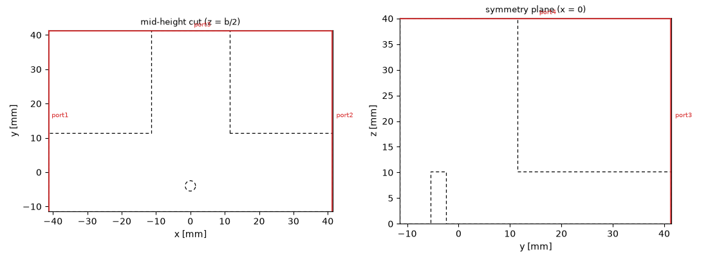
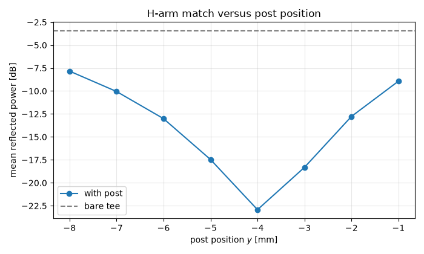
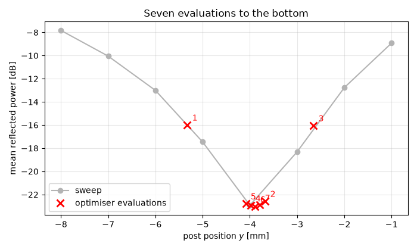
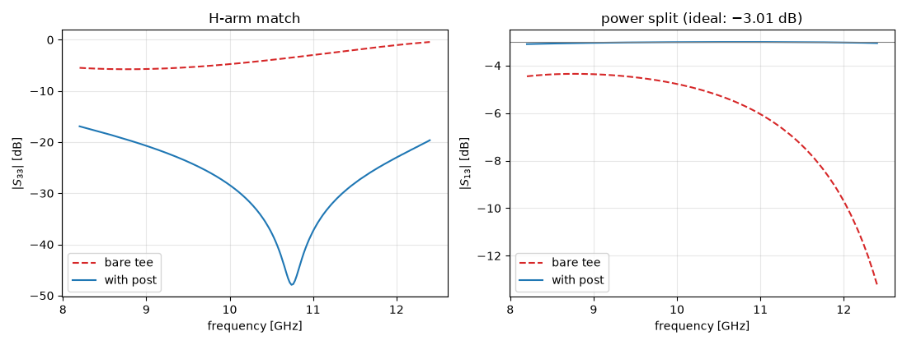

Note
Go to the end to download the full example code.
Parameter sweeps and optimisation#
Every tutorial so far simulated one fixed design. Real work rarely looks like that: a dimension is unknown, a match is too poor, and the question is not “what does this structure do” but “which structure does what I want”.
Magnelio has no sweep API and no built-in optimiser — deliberately.
A simulation is an ordinary Python object built by ordinary Python
code, so a sweep is a for loop and an optimisation is
scipy.optimize calling a function you wrote. Everything the
Python ecosystem offers applies directly: SciPy’s optimisers, NumPy
for the bookkeeping, and any parallel-execution tool you already use.
The device is the magic tee from the field-monitor tutorial. Its splitting and its isolation are excellent, but its H-arm match is poor — and we are going to fix that with a single matching post, found first by a sweep and then by an optimiser.
The starting point: a hybrid that reflects#
Driving the H-arm of a bare tee splits the power equally onto the collinear arms — but only the fraction that gets in. The junction is not merely an impedance step from one guide into two in parallel; it carries a substantial reactance, and the result is that a large part of the incident power comes straight back.
The fix is classical: a conducting post spanning the broad walls, placed in the collinear guide opposite the H-arm opening, where its reflection arrives back at the junction with the phase needed to cancel the mismatch. We put it on the symmetry plane \(x = 0\) — a choice we will come back to, because it decides what the post is allowed to disturb.
import matplotlib.pyplot as plt
import numpy as np
from scipy.optimize import minimize_scalar
import magnelio as mio
from magnelio import geo, plots, ports
A = 22.86e-3 # WR-90 broad wall
B = 10.16e-3 # WR-90 narrow wall
ARM = 30.0e-3 # arm length beyond the junction
R_POST = 1.5e-3 # matching-post radius
F_MIN, F_MAX = 8.2e9, 12.4e9 # WR-90 design band
pec = mio.Material.pec()
air = mio.Material.air()
Geometry as a function of a parameter#
This is the whole idea of the tutorial: wrap the model in a
function whose argument is the quantity you want to vary. The
function below returns a ready-to-run analysis for a post at
y_post; passing None gives the bare tee.
Note how the post enters. A GeometryModel rejects shapes that
overlap volumetrically, so a metal cylinder cannot simply be laid
into the air body. It does not have to be: the background is
already PEC, so subtracting a cylinder from the air leaves a hole
that the background fills. One boolean operation, and the tee has
a post.
def build_tee(y_post=None):
"""Magic tee, optionally with a matching post at ``(0, y_post)``."""
collinear = geo.Brick.from_ranges(
x1=-(A / 2 + ARM), dx=A + 2 * ARM, y1=-A / 2, dy=A, z1=0.0, dz=B, material=air
)
h_arm = geo.Brick.from_ranges(
x1=-A / 2, dx=A, y1=0.0, dy=A / 2 + ARM, z1=0.0, dz=B, material=air
)
e_arm = geo.Brick.from_ranges(
x1=-B / 2, dx=B, y1=-A / 2, dy=A, z1=0.0, dz=B + ARM, material=air
)
body = geo.Union(collinear, h_arm, e_arm, name="tee")
if y_post is not None:
# The cutter may reach below the floor -- that is background
# metal anyway -- but it must stop at the broad wall z = B,
# or it would eat into the E-arm standing on that wall.
body = body - geo.Cylinder(
origin=(0.0, y_post, -1e-3), radius=R_POST, height=B + 1e-3, axis="z"
)
model = mio.GeometryModel(background=pec)
model.add(body)
model.add_port(ports.PortWaveguide(name="port1", plane="xmin", n_modes=1))
model.add_port(ports.PortWaveguide(name="port2", plane="xmax", n_modes=1))
model.add_port(ports.PortWaveguide(name="port3", plane="ymax", n_modes=1))
model.add_port(ports.PortWaveguide(name="port4", plane="zmax", n_modes=1))
return model
The mesh deserves a word of its own. The post is 3 mm across, and a grid that cannot resolve it will not react to moving it: on a 1.6 mm grid — perfectly adequate for the bare tee — the very same post changes the match by less than 0.2 dB, while on the 1.0 mm grid used here it changes it by more than 9 dB. An optimiser fed the coarse grid would not find a bad optimum; it would find noise and report it as an optimum.
The rule to take away: the grid must resolve the parameter you are varying, not just the structure you started from.
The mesher will warn that one interval undershoots the cell size it
asked for and that raising min_cell_size would remove the
undershoot. That advice is sound in general — the smallest cell
anywhere sets the time step, and hence the cost of every one of the
fifteen runs below — but following it here would coarsen the grid
past the post and destroy the very sensitivity we are after. A
mesher warning reports a cost, it does not know your intent.
def tee_analysis(y_post=None):
"""Build, mesh and set up a scattering analysis in one call."""
mesh = mio.Mesh.from_geometry(
build_tee(y_post),
mio.MeshControl(min_nodes_per_wavelength=15, min_cell_size=1.0e-3),
f_max=F_MAX,
)
return mio.AnalysisScatteringTD(mesh=mesh, f_min=F_MIN, f_max=F_MAX, verbose=False)
def run_tee(analysis, both=False):
"""Run the analysis; the band-edge ringing needs a relaxed stop."""
excited = ["port3", "port4"] if both else ["port3"]
return analysis.run(excited=excited, port_signal_stop_db=50.0, taper_signals=True)
A look at the post#
Two cuts are needed, because each hides what the other shows. The mid-height cut gives the post’s position: a small metal island in the collinear guide, a few millimetres behind the H-arm mouth. The cut along the symmetry plane gives its shape, and that is where the physics sits — the post spans the full guide height, broad wall to broad wall, which is what makes it an inductive element carrying a wall-to-wall current rather than a small scattering obstacle. A post stopping short of the opposite wall would be a different component altogether. For orientation in that second cut: the collinear guide is the low channel along the bottom, the H-arm leaves to the right, and the E-arm rises through the broad wall.
posted = build_tee(-4.0e-3)
fig, axes = plt.subplots(1, 2, figsize=(11, 4.0))
plots.plot_cross_section(posted, "z", B / 2, ax=axes[0], title="mid-height cut (z = b/2)")
plots.plot_cross_section(posted, "x", 0.0, ax=axes[1], title="symmetry plane (x = 0)")
fig.tight_layout()

Choosing what to minimise#
An optimiser needs a single number, and the choice of that number
matters more than the choice of optimiser. The obvious candidate —
the worst |S33| anywhere in the band — is a poor one: it reacts
to a single narrow resonance and is therefore jagged in the
geometry parameter.
The mean reflected power over the band is smooth, robust against isolated spikes, and physically meaningful: −20 dB means one percent of the incident power comes back on average.
def reflected_power_db(result):
"""Mean reflected power at the H-arm over the design band [dB]."""
band = (result.f_axis >= F_MIN) & (result.f_axis <= F_MAX)
s33 = result.S("port3", "port3")[band]
return 10 * np.log10(np.mean(np.abs(s33) ** 2))
baseline = run_tee(tee_analysis(), both=True)
print(f"bare tee: mean reflected power {reflected_power_db(baseline):.2f} dB")
UserWarning: Smallest cell 0.001254 m (x, in the 0.01016 m interval [-0.00508, 0.00508]) is 21% below the 0.001587 m this interval asked for, and it sets the time step. MeshControl(min_cell_size=0.00159) removes the undershoot.
bare tee: mean reflected power -3.46 dB
The sweep#
With a model function and an objective in hand, the sweep is a
for loop — the point being that there is nothing Magnelio-
specific left to learn. Eight positions are enough to see the
shape of the landscape, which is what a sweep is for; finding the
exact bottom is the optimiser’s job.
y = -8.00 mm -> -7.81 dB
y = -7.00 mm -> -10.03 dB
y = -6.00 mm -> -12.99 dB
y = -5.00 mm -> -17.43 dB
y = -4.00 mm -> -22.92 dB
y = -3.00 mm -> -18.34 dB
y = -2.00 mm -> -12.78 dB
y = -1.00 mm -> -8.93 dB
The landscape has a single clear minimum a few millimetres behind the junction — no side minima, no plateau, which is what makes the one-dimensional optimiser below a safe choice.
The position is not arbitrary. At 10 GHz the guide wavelength in WR-90 is about 39.8 mm, so a post roughly \(\lambda_g/8\) behind the junction sends its reflection back with about a quarter wavelength of round-trip path — the classical stub condition, transplanted into a waveguide. Treat that as an order-of-magnitude estimate for where to start looking, not as a formula: the relevant reference plane is the post’s near edge rather than its axis, and neither the junction nor the post has a sharply defined one.
fig, ax = plt.subplots(figsize=(7, 4.2))
ax.plot(y_sweep * 1e3, refl_sweep, "o-", label="with post")
ax.axhline(reflected_power_db(baseline), color="0.5", ls="--", label="bare tee")
ax.set_xlabel("post position $y$ [mm]")
ax.set_ylabel("mean reflected power [dB]")
ax.set_title("H-arm match versus post position")
ax.grid(alpha=0.3)
ax.legend()
fig.tight_layout()

The optimiser#
scipy.optimize.minimize_scalar needs a function from a number
to a number, which is exactly what the two helpers above compose
into. The tolerance deserves a thought: repeating the same
geometry on grids from 1.2 mm down to 0.6 mm scatters the objective
by about ±1.4 dB, so the bottom of this trough is known to roughly
a decibel no matter how hard the optimiser works. Asking for the
position to a tenth of a millimetre would be spending simulations
on digits that the discretisation does not support; 0.3 mm is
honest and costs seven evaluations.
history = []
def objective(y_mm):
"""Mean reflected power for a post at ``y_mm`` millimetres."""
value = reflected_power_db(run_tee(tee_analysis(y_mm * 1e-3)))
history.append((y_mm, value))
print(f" eval y = {y_mm:+6.3f} mm -> {value:6.2f} dB")
return value
opt = minimize_scalar(objective, bounds=(-8.0, -1.0), method="bounded", options={"xatol": 0.3})
print(f"\noptimum: y = {opt.x:.2f} mm, mean reflected power {opt.fun:.2f} dB")
eval y = -5.326 mm -> -15.94 dB
eval y = -3.674 mm -> -22.57 dB
eval y = -2.652 mm -> -16.06 dB
eval y = -3.984 mm -> -22.95 dB
eval y = -4.084 mm -> -22.77 dB
eval y = -3.884 mm -> -23.02 dB
eval y = -3.784 mm -> -22.91 dB
optimum: y = -3.88 mm, mean reflected power -23.02 dB
Plotting the optimiser’s path over the swept landscape shows how few evaluations a bracketing method needs once the landscape is known to be unimodal — and that most of them are spent confirming the bottom rather than finding it.
fig, ax = plt.subplots(figsize=(7, 4.2))
ax.plot(y_sweep * 1e3, refl_sweep, "o-", color="0.7", label="sweep")
hist = np.array(history)
ax.plot(hist[:, 0], hist[:, 1], "rx", ms=9, mew=2, label="optimiser evaluations")
for i, (y, val) in enumerate(history, start=1):
ax.annotate(str(i), (y, val), textcoords="offset points", xytext=(6, 5), color="r")
ax.set_xlabel("post position $y$ [mm]")
ax.set_ylabel("mean reflected power [dB]")
ax.set_title("Seven evaluations to the bottom")
ax.grid(alpha=0.3)
ax.legend()
fig.tight_layout()

What the post bought#
The final design gets a full run with both drives, so the whole scattering matrix can be compared against the bare tee.
matched = run_tee(tee_analysis(opt.x * 1e-3), both=True)
band = (baseline.f_axis >= F_MIN) & (baseline.f_axis <= F_MAX)
f_ghz = baseline.f_axis[band] / 1e9
def db(result, i, j):
return 20 * np.log10(np.abs(result.S(f"port{i}", f"port{j}")[band]))
fig, (ax1, ax2) = plt.subplots(1, 2, figsize=(11, 4.2))
ax1.plot(f_ghz, db(baseline, 3, 3), "--", color="C3", label="bare tee")
ax1.plot(f_ghz, db(matched, 3, 3), "-", color="C0", label="with post")
ax1.set_ylabel(r"$|S_{33}|$ [dB]")
ax1.set_title("H-arm match")
ax2.plot(f_ghz, db(baseline, 1, 3), "--", color="C3", label="bare tee")
ax2.plot(f_ghz, db(matched, 1, 3), "-", color="C0", label="with post")
ax2.axhline(-3.01, color="0.5", lw=0.8)
ax2.set_ylabel(r"$|S_{13}|$ [dB]")
ax2.set_title("power split (ideal: −3.01 dB)")
for ax in (ax1, ax2):
ax.set_xlabel("frequency [GHz]")
ax.grid(alpha=0.3)
ax.legend()
fig.tight_layout()

Both panels improve, and they improve for the same reason. Power that no longer returns to the H-arm has nowhere to go but the collinear arms, so the splitting moves from its mismatched value onto the ideal −3.01 dB line. A match and a split are not two independent specifications of a lossless junction; they are two views of the same energy balance.
print(f"split bare: {db(baseline, 1, 3).mean():6.2f} dB", end="")
print(f" matched: {db(matched, 1, 3).mean():6.2f} dB")
print(f"reflection bare: {reflected_power_db(baseline):6.2f} dB", end="")
print(f" matched: {reflected_power_db(matched):6.2f} dB")
split bare: -6.05 dB matched: -3.03 dB
reflection bare: -3.46 dB matched: -23.02 dB
What the post was not allowed to break#
The post sits on the mirror plane \(x = 0\), and that placement
was a design decision, not a convenience. The tee’s isolation
exists because an H-arm drive excites a field symmetric about that
plane and an E-arm drive an antisymmetric one; modes of opposite
symmetry cannot couple. A post on the plane keeps the structure
symmetric, so the argument survives the modification untouched —
and the numbers confirm it: |S43| stays around −155 dB with and
without the post. Both readings are numerical floor rather than
physics, which is why they wander by a few decibels from one grid
to the next; the isolation of a symmetric junction is not small,
it is zero.
The E-arm match is a different matter, and the distinction is worth stating precisely. Symmetry forces a coupling between opposite symmetry classes to vanish; it says nothing about a reflection within one class. Our post is 3 mm thick, so it reaches out to \(x = \pm 1.5\) mm, where the antisymmetric field is no longer zero — it is nearly invisible to the E-arm, not exactly invisible.
for name, result in (("bare tee", baseline), ("with post", matched)):
print(
f"{name:10s} isolation |S43| {db(result, 4, 3).max():7.1f} dB"
f" E-arm match |S44| {db(result, 4, 4).max():6.2f} dB"
)
bare tee isolation |S43| -162.8 dB E-arm match |S44| -4.98 dB
with post isolation |S43| -158.2 dB E-arm match |S44| -3.85 dB
Where this stops#
One parameter bought roughly 20 dB of match across the band, which is a great deal for one boolean operation — but it is worth being clear about the limits of what was done here.
The objective averages over the band, so the optimiser trades
performance at one frequency for performance at another; a design
that must meet a specification at every frequency needs a
worst-case objective, and then the jaggedness discussed earlier has
to be handled — typically by smoothing, or by an optimiser that
tolerates noise. The remaining reflection is also not uniformly
distributed: a single post is a narrowband element used broadband,
and squeezing the band edges further would take a second element
and a two-dimensional optimisation. scipy.optimize.minimize
handles that with the same model function; only the objective’s
signature changes.
Finally, the honest caveat about accuracy. The objective carries about a decibel of grid-induced uncertainty, so the optimum position is meaningful to a few tenths of a millimetre and no further. That is a property of the discretisation, not of the optimiser, and no amount of extra iterations will improve it — the way to a sharper answer is a finer grid, at a cost that the sweep above lets you estimate before you commit to it.
Total running time of the script: (3 minutes 2.924 seconds)